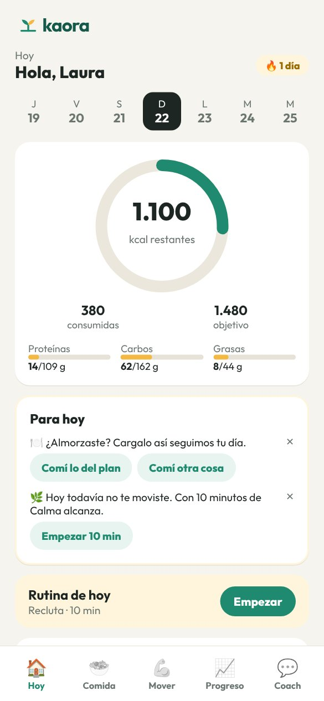
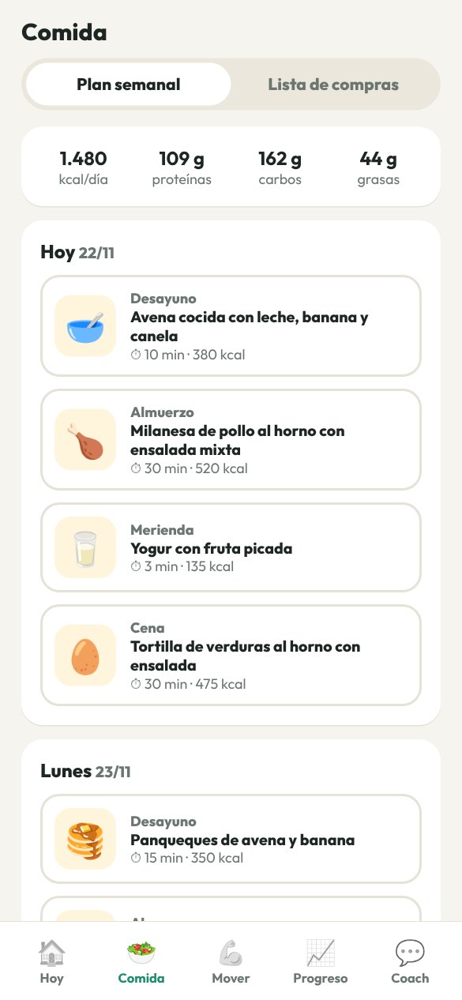
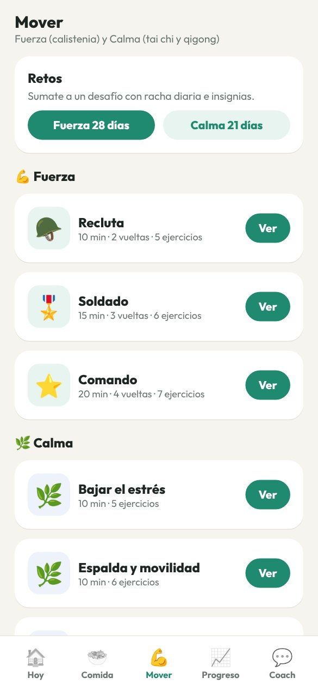
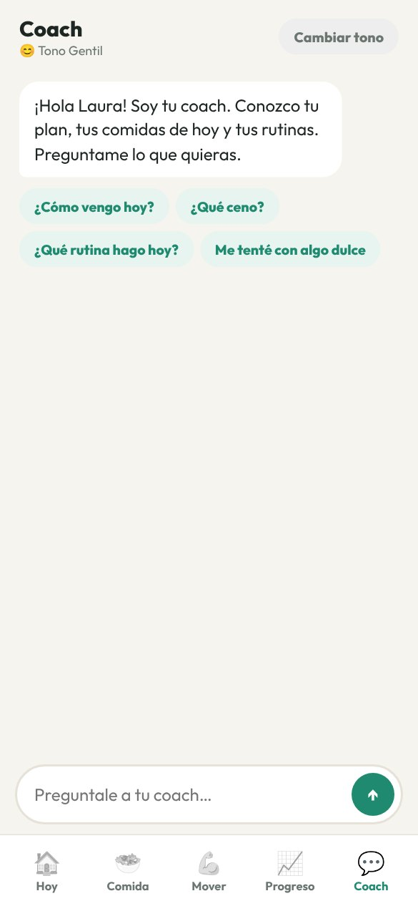

Kaora te arma las comidas según tu presupuesto, te propone rutinas de fuerza y de calma para hacer en casa, y te acompaña todo el día con un coach que te conoce.

En la lengua del pueblo maorí, de Nueva Zelanda, la palabra ora quiere decir vida, salud, estar bien. Por eso, cuando se saludan, dicen kia ora: que tengas vida, que estés bien.
Kaora nace de ese sonido. Suena a ka ora, algo así como "vas a estar bien". Esa es la idea de la app: no prometerte un cuerpo de revista, sino acompañarte a estar mejor, un día a la vez.
A principios de los años 80, el médico maorí Mason Durie propuso una forma de pensar la salud que hoy se usa en todo su país: Te Whare Tapa Whā, la casa de cuatro paredes.
La salud es como el wharenui, la casa de reunión de la comunidad. Para estar firme necesita sus cuatro paredes, y si una se debilita toda la casa se resiente. Las cuatro se apoyan sobre la tierra. Con esa imagen pensamos Kaora.
Cómo crece, cómo se mueve, cómo lo alimentamos y lo cuidamos.
En Kaora: comidas a tu medida y rutinas de fuerza con el peso del cuerpo.
Lo que pensamos y sentimos, y cómo atravesamos los días difíciles.
En Kaora: rutinas de calma con tai chi y qigong, y un momento para contar cómo te sentiste.
La familia, los amigos, la comunidad: no nos cuidamos solos.
En Kaora: recetas caseras para toda la mesa y logros para compartir con los tuyos.
Lo que nos importa, lo que nos da ganas de levantarnos cada día.
En Kaora: tu propio porqué, el descanso y un acompañamiento sin culpa ni castigo.
Kaora no es una palabra ni una app maorí: es nuestro homenaje a una manera de entender la salud que nos inspiró. Te Whare Tapa Whā es un modelo creado por Sir Mason Durie y forma parte del sistema de salud de Nueva Zelanda.
Casi todos queremos comer mejor y movernos más. Lo que falla casi nunca son las ganas.
Respondés unas preguntas y Kaora arma todo a tu medida: tus comidas, tu movimiento y tu acompañamiento.
Así es Kaora por dentro: simple, clara y en castellano de acá.



Calorías y proteínas calculadas para vos, con recetas caseras argentinas que elegís vos.
Le decís cuánto podés gastar y el plan se arma con lo que entra en tu bolsillo.
Se arma sola por rubro: verdulería, carnicería, almacén. La mandás por WhatsApp con un toque.
Si te aburrís, el coach te propone recetas nuevas que respetan tus gustos y restricciones.
Sacale una foto a lo que comiste y Kaora estima las calorías por vos.
Rutinas de calistenia con el peso del cuerpo, en casa, con animación de cada ejercicio. Tres niveles para ir subiendo.
Tai chi y qigong para bajar el estrés, soltar la espalda y dormir mejor.
Le preguntás lo que quieras: qué cenar, cómo vas, qué hacer si te tentaste. Elegís el tono: gentil, directo o bardero.
Aunque la app esté cerrada: la comida sin cargar, el agua, el movimiento y la hora de descansar.
Contás los vasos de agua con un toque y anotás cómo te sentiste cada día.
Tu peso, tus días seguidos y tus rutinas, para ver cuánto avanzaste.
Una imagen lista para tus redes cuando completás una rutina o cumplís una racha.
Sí. Se instala desde el navegador del teléfono, sin pasar por la tienda de aplicaciones. En iPhone, para recibir avisos, hay que agregarla a la pantalla de inicio.
Ahora la estamos probando y se usa gratis. Más adelante va a tener una versión gratuita y una completa a un precio en pesos accesible.
No. Kaora da orientación general para comer mejor y moverte más. Si tenés una enfermedad, estás embarazada o tomás medicación, consultá con un profesional de la salud.
No es obligatorio. Con una cuenta, entrando con tu mail, tus datos se guardan y los recuperás si cambiás de teléfono.
No. Las rutinas de fuerza son con el peso del cuerpo y las de calma no necesitan nada. Alcanza con un poco de espacio en casa.
Está inspirado en la lengua maorí: suena a "ka ora", algo así como "vas a estar bien". La historia completa está más arriba.
Abrila desde el celular, contestá unas preguntas y en dos minutos tenés tu plan. Vas a estar bien.